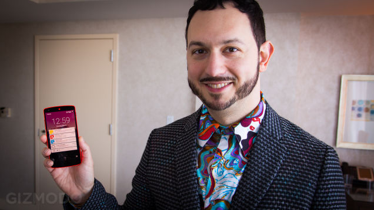
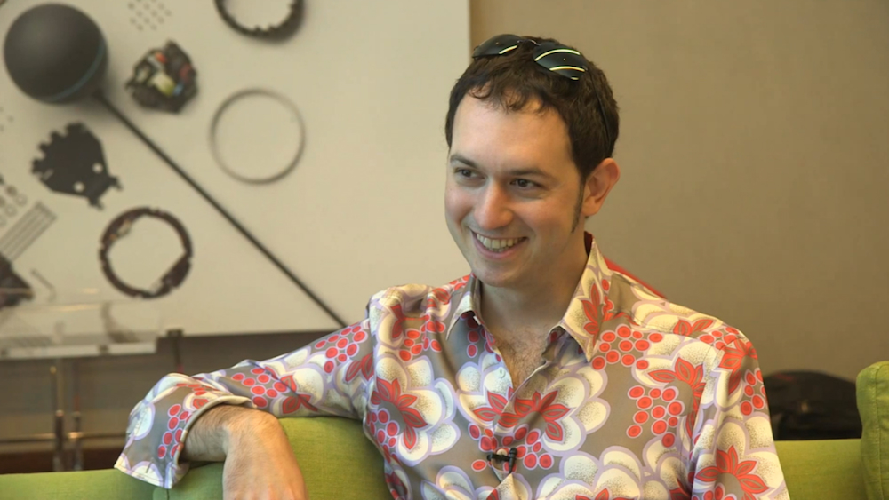
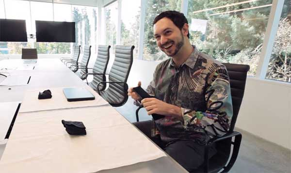

Mataias Duarte is responsible for creating googles design language. Which is an incredible feat if you ask me. His work on UI design is some of the best. His emphasis on white space, and heirarchy resonate with my personal taste. He is my career goals.
Biography Matias Duarte (born in 1973) is a Chilean computer interface designer and Google's Vice President of design. Prior to his current role, he was the Director of Android operating system User Experience. Android 3.0 "Honeycomb" was the first release with a major elements of his design influence. Prior to moving to Google to work on Android, Duarte had similar roles in Palm’s webOS, the Helio Ocean and the Danger Hiptop (T-Mobile Sidekick). Matías started his career at Psycroft where he cowrote  xBill with Brian Wellington. He left Psycroft in 1996 at which time he moved to Hyper Image Productions where he was the lead designer on the Phase Zero hovercraft simulator. In 1997 he left Hyper Image Productions and moved to MagicArts where he filled the role of Vice President of Design until 1999. In March 2000 Matías took a role at Danger as the Director of Design where his team won the 2002 Wired 'Industrial Designer' Rave Award[6] for their work in designing the Hiptop/SideKick. In August 2005 he took up a role at Helio, as Vice President Experience Design and left shortly before the company was acquired by Virgin Mobile. In September 2007 Duarte was hired as the Vice President at Palm, Inc. to lead development of Palm’s webOS Human Interface and User Experience and introduced the design of webOS at the 2009 Consumer Electronics Show. In May 2010 Matías was hired by Google as Director for the Android User Experience working on the interface and design for Android 3.0 (AKA Honeycomb). Duarte earned a Bachelor of Science with Honors in Computer Science from the University of Maryland (1992–1996). He took on additional concentrations of study in Fine Art and Art History, and managed the Student Art Gallery from 1993 to 1996. Recognitions include: Dean's Award for Academic Achievement, Outstanding Graduating Senior, Golden Key International Honour Society, and Phi Kappa Phi.